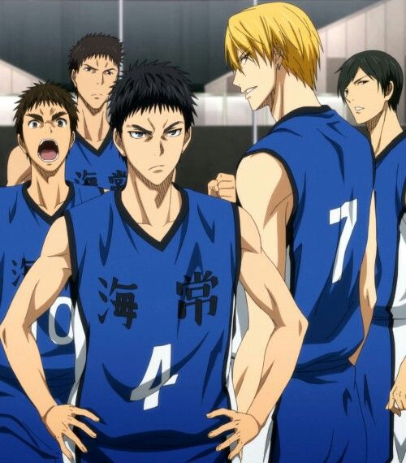
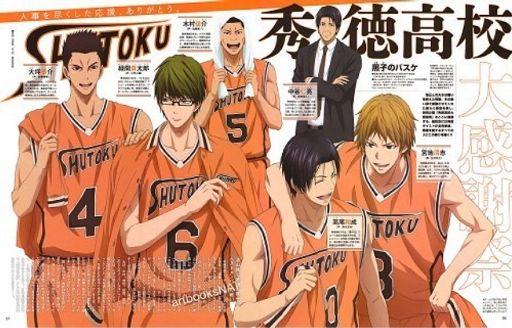
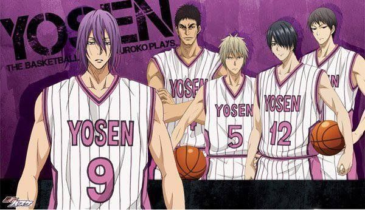
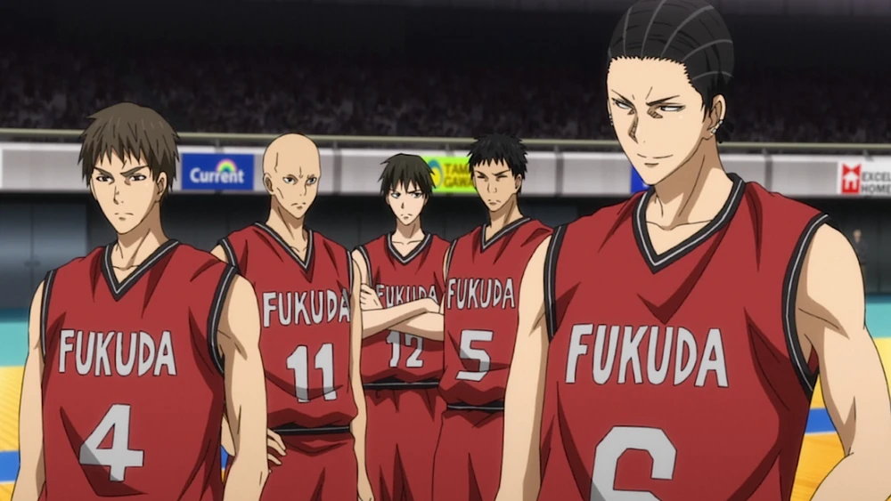
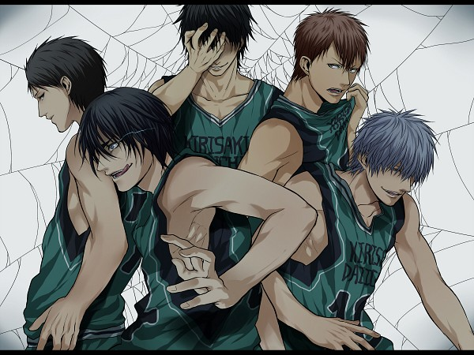

Seirin's basketball team, led by coach Riko Aida and captain Junpei Hyūga, quickly gains recognition despite being a relatively new team. With a focus on teamwork, discipline, and relentless effort, the team's strength lies in its ability to blend individual talents into a cohesive unit. Unlike many teams that rely on a star player, Seirin strength comes from their collaboration. Every member contributes, and they work together to cover each other's weaknesses. The team rapid ascent is largely attributed to the arrival of Kuroko Tetsuya, a former member of the legendary "Generation of Miracles," and Kagami Taiga, a powerful player returning from the U.S. Their unique partnership, blending Kuroko's misdirection and playmaking with Kagami's physical dominance, makes Seirin a formidable team. Seirin embraces the role of the underdog, consistently pushing themselves to compete against much more established and powerful teams. They rely on a fast-paced, aggressive style that puts pressure on opponents, especially when they work in sync as a team. Seirin goal is simple but ambitious: to defeat the "Generation of Miracles" and become the best high school basketball team in Japan.
Kaijo High

Kaijō High School (Kaijō Kōkō) is a well-known school in Kuroko no Basket with a strong basketball program. The team is consistently one of the top contenders in the Kanagawa region and is respected for both its strategic gameplay and talented players. Their coach emphasizes teamwork, but the team also boasts individual star power, particularly with Ryōta Kise, a former member of the Generation of Miracles. Kaijō focuses on team-based tactics but heavily relies on Kise exceptional ability to copy other players. Their strategy often revolves around Kise being able to outplay his opponents by using their own moves against them. The team is balanced, with Kasamatsu being a great support for Kise and other role players contributing effectively. One of the most intense matches involving Kaijō is against Seirin High, where Kise faces off against Kagami and Kuroko. During this match, Kise reveals his Perfect Copy at its fullest, which allows him to imitate even the skills of other Generation of Miracles members.
Shutoku High

Shutoku is renowned for its balanced offensive and defensive capabilities. Their playstyle focuses on using precise strategy, discipline, and exceptional shooting skills, which make them one of the toughest teams to face. Shutoku strategy revolves heavily around Midorima shooting prowess. They create opportunities for him to take shots while maintaining a strong defensive line. Their gameplay is highly tactical, focusing on precision and minimizing mistakes. They are also a well-rounded team with other key players like Takao, who complement Midorima style and contribute to their strong team cohesion. Shutoku is one of the "Three Kings" of Tokyo basketball, consistently ranking as one of the top teams in the region. They have a heated rivalry with Seirin High and are famous for their thrilling matches against other top teams in the series. Shutoku High basketball team is known for combining unwavering discipline, powerful long-range shooting, and smart teamwork, making them one of the toughest opponents in the series.
Yosen High

Yosen is built around a solid, nearly impenetrable defense. They are especially known for their zone defense and shot-blocking ability. Yosen primary tactic is to lock down their opponents on defense, limiting their ability to score, and then using their height and power to secure points close to the basket. Their offense tends to rely on quick passes to exploit mismatches, with Murasakibara being the focal point in the paint. While they don't play an up-tempo game, their dominance in defense and rebounding gives them control over the pace. The team is composed of some of the tallest and most physically imposing players in the series. Their physical prowess is their main weapon, and they use their size advantage to dominate both ends of the court. Unlike teams that focus on speed and agility, Yosen plays a slow and methodical game, relying on their defense to shut down opponents and create scoring opportunities through physical dominance.
Touou Gakuen
Touou Gakuen is a high school featured in Kuroko no Basket, and their basketball team is one of the strongest in the series. Touou is renowned for its aggressive, offensive style of play and its ability to dominate opponents through both individual talent and teamwork. Touou Gakuen is considered a powerhouse in high school basketball. Their strong reputation comes from having recruited top players, particularly those with national recognition. Touou relies on a fast-paced, offense-first style of play. While Aomine carries the brunt of the scoring load, the rest of the team supports him with a cohesive strategy, often built around exploiting Aomine strengths.
Rakuzan High
Rakuzan High School is one of the most prestigious institutions in Kuroko no Basket (Kuroko's Basketball), known especially for its dominance in high school basketball. Rakuzan is regarded as one of the top basketball schools in Japan, often feared by other teams for its consistent victories and formidable roster of players. Rakuzan is known for its well-rounded players, each with their own unique abilities. Whether it's overwhelming physical strength, expert dribbling, or accurate shooting, Rakuzan players complement each other, making them a versatile and unpredictable team. The team embodies a mentality of absolute victory, with Akashi commanding influence shaping the team's unwavering confidence and discipline. Rakuzan enters each game with the expectation of winning, backed by a perfect combination of individual talent and collective effort.
Fukuda Sogo Academy

Fukuda High's playing style emphasizes a balance of individual talent and teamwork. They often employ aggressive strategies, taking advantage of their players' strengths to outmaneuver opponents. Their matches are characterized by fast-paced action and intense rivalries. Fukuda Sogo Academy is portrayed as a formidable opponent in various tournaments throughout Kuroko no Basket. Their interactions with other teams highlight themes of rivalry, growth, and the competitive nature of high school basketball.
Kirisaki Daiichi High

The Kirisaki Daiichi basketball team has a formidable reputation in the high school basketball circuit. Known for their aggressive and strategic style of play, they are one of the top contenders in tournaments. The team is rigorously coached, emphasizing discipline, teamwork, and physical conditioning. Their training is intense, aimed at developing both individual skills and team synergy. The team consists of several other talented players who each bring unique strengths, contributing to the overall performance of Kirisaki Daiichi. Their intense matches against rival schools create exciting dynamics, showcasing the high stakes and competitive spirit of high school basketball.